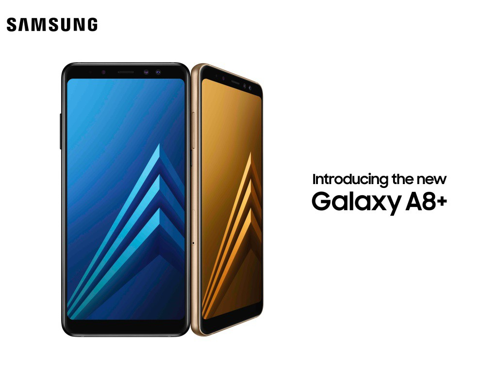

Barra para grupos

Ya se encuentran disponibles los Galaxy A8 en Colombia. Estos equipos, presentados en diciembre a nivel mundial, son los más recientes exponentes de la línea de gama media alta de la compañía y se caracterizan por tener cámara frontal dual. Esta línea, en su versión de 2018, consta del A8 y el A8+, con las siguientes especificaciones.
¿Te acuerdas del techo de energía solar de Tesla? ¿Un tejado que parece convencional pero que en realidad es un gran panel solar para generar energía sostenible? La compañía de Elon Musk decidió esta semana llevar este producto ‘estrella’ a tiendas de hogar mayoristas en Estados Unidos, según reportó Bloomberg.